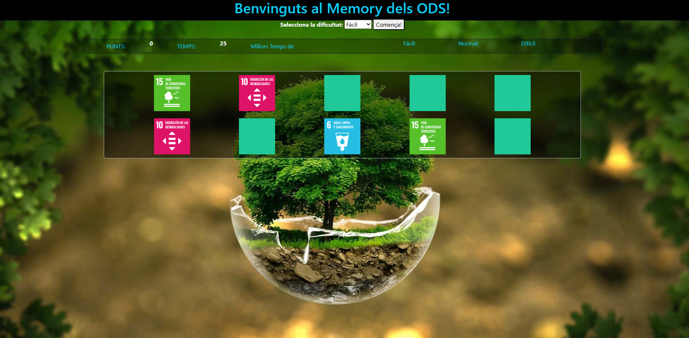
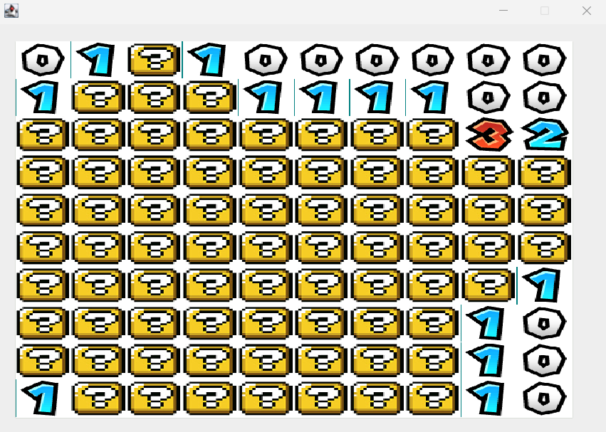
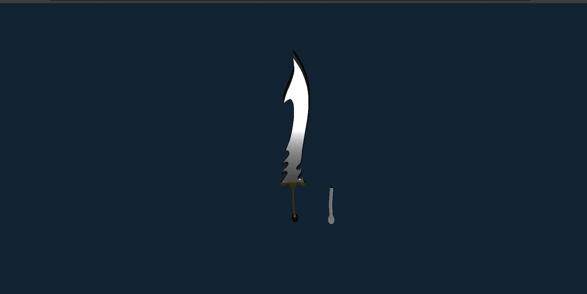
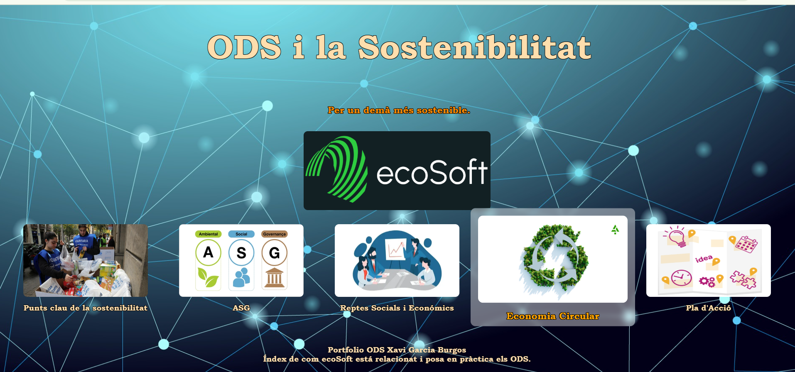

Proyectos

Memory
El mítico juego de Memory basado en los ODS. Utilizando HTML, CSS (BootStrap) y JavaScript para controlar los procesos y llevar un marcador junto con un registro de mejores puntuaciones.

Buscaminas
Buscaminas hecho con Java. Gracias a este proyecto entendí como funciona la recursividad y la programación estructurada. Utilizando la biblioteca de JavaSwing aprendí a utilizar imágenes, gifs y sonidos para personalizar la experiencia del usuario utilizando la aplicación.

3D Web
Pequeña web donde exploro los escenarios 3D dentro de entornos de navegador y cómo capturar eventos que interactúan con los elementos del escenario. Esta web me ayudó a entender cómo funcionaba una web 3D por dentro y los elementos que la componen.

Portafolio ODS
Mi primer proyecto hecho con HTML y CSS. Un portafolio de los ODS más importantes donde exploro las animaciones con CSS.
